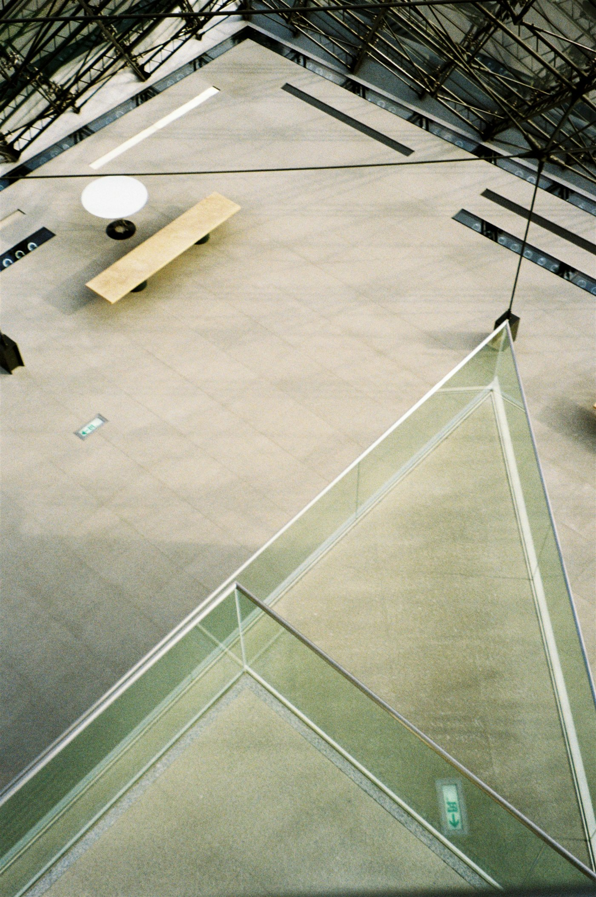

Light, held.
Architectural image studies.
Looking at the space between structure and stillness.

Full photographic frameThis is an image study, not a building designed by Still / Form.
SELECTED STUDY / 2026A line through
01
A line through
quiet space.
The diagonal of a glass balustrade cuts through a room of pale concrete. A study in restraint, proportion and borrowed light.
THE APPROACH
Let the material do the speaking. One photograph, an open grid, and enough quiet to notice where the light lands.